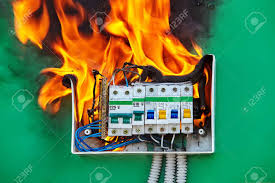

Projeto Artes
postado 07 de Dezembro 2024
Leonardo da Vinci (1452–1519) foi um dos maiores gênios da história, conhecido por suas contribuições em diversas áreas como arte, ciência, engenharia e anatomia. Ele nasceu em Anchiano, perto de Vinci, na Itália, e viveu durante o período do Renascimento, uma era marcada pelo florescimento cultural e científico.
Clique na imagem
Projeto Eletricista (inacabado)
postado 07 de Dezembro 
Os eletricistas desempenham um papel crucial na sociedade moderna, pois são responsáveis por projetar, instalar, manter e reparar sistemas elétricos que alimentam residências, indústrias e infraestrutura pública.
Clique na imagem